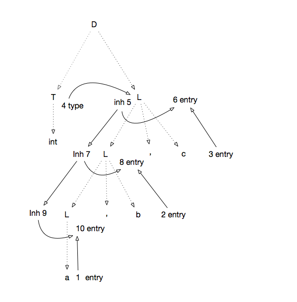
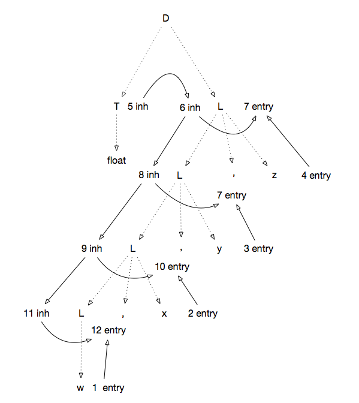

习题答案
5.2.2


5.2.4
S -> L . L | L
L -> L B | B
B -> 0 | 1
s
|产生式|语义规则|
|----|----|
|S->L1.L2|L1.isLeft = true
L2.isLeft=false
S.val = L1.val + L2.val|
|S->L|L.isLeft = true
S.val = L.val|
|L1->L2B|L1.isLeft=true
L1.len + 1
L1.val = L1.isLeft ? L2.val * 2 + B.val : L1.val + B.val * 2 ^(-L.len)
|L->B|L.len = 1
L.val = L.isLeft ? B.val : B.val / 2|
|B->0|B.val = 0|
|B->1|B.val = 1|
其中:
- isLeft为继承属性， 表示节点是否在小数点的左边
- len为综合属性， 表示节点包含的二进制串的长度
- val为综合属性
5.2.5
| 产生式 | 语义规则 |
|---|---|
| S->L_1.L_2 | S.val = L_1.val + L_2.val / L_2.f |
| S->L | S.val = L.val |
| L->L1B | L.val = L_1.val * 2 + B.val L.f = L_1.f * 2 |
| L->B | L.val = B.val L.f = 2 |
| B->0 | B.val = 0 |
| B->1 | B.val = 1 |
5.3.1
| 产生式 | 语义规则 |
|---|---|
| E -> E_1 + T | E.type = E_1.type == float||T.type == float ? float : int |
| E -> T | E.type = T.type |
| T -> num1.num2 | T.type = float |
| T -> num | T.type = int |
- wrapped: 表达式最外层是否有括号
- procedence: 令+, *, ()和单digit的优先级分别为0, 1, 2, 4。 如果表达式最外层有括号， 则为去掉括号后最后被计算的运算符的优先级， 否则为表达式最后被计算的运算符的优先级.
- expr: 表达式
- cleanExpr: 去除了冗余括号的表达式。
| 产生式 | 语法规则 | |
|---|---|---|
| 1) | L -> En | L.cleanExpr = E.wrapped ? E.cleanExpr : E.expr |
| 2) | E -> E_1 + T | E.wrapped = false E.precedence = 0 E.expr = E_1.expr || " + " || T.expr E.cleanExpr = (E_1.wrapped ? E_1.cleanExpr : E_1.expr) || (T.wrapped ? T.cleanExpr : T.expr) |
| 3) | E -> T | E.wrapped = T.wrapped E.precedence = T.precedence E.expr = T.expr E.cleanExpr = T.cleanExpr |
| 4) | T -> T_1 * F | T.wrapped = false T.precedence = 1 T.expr = T_1.expr || "*" || F.expr T.cleanExpr = (T_1.wrapped && T_1.precedence >= 1 ? T_1.cleanExpr : T_1.expr) || * || (F.wrapped && F.precedence >= 1 ? F.cleanExpr : F.expr) |
| 5) | T -> F | E.wrapped = T.wrapped E.precedence = T.precedence E.expr = T.expr E.cleanExpr = T.cleanExpr |
| 6) | F -> (E) | F.wrapped = true F.precedence = E.precedence F.expr = "(" || E.expr || ")" F.cleanExpr = E.expr |
| 7) | F->digit | F.wrapped = false F.precedence=3 F.expr=digit F.cleanExpr=digit |